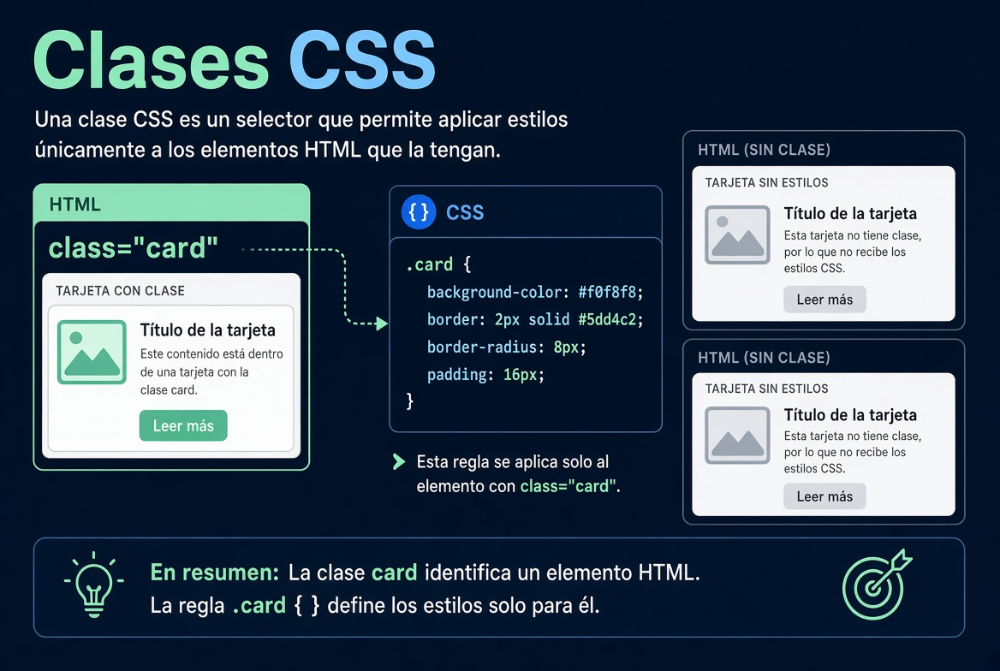

Lección 6 — Clases y display

Hacé clic en el audio para mostrar el texto de esta lección.
Las clases hacen que el CSS escale. El nombre lo elegís vos. Puede ser logo-img o search-input. En HTML va class y el nombre. En CSS el selector lleva un punto adelante: .search-input.
Si cambiás el selector de img a punto logo-img y te olvidás de poner esa clase en el HTML, el diseño se rompe. No es magia: esa regla ya no apunta a ningún elemento.
Display block explica por qué tres divs de colores se apilan. Cada uno ocupa todo el ancho y empuja al siguiente hacia abajo. El navegador además le pone un margen por defecto al body. Por eso a veces ves un borde blanco alrededor. Si querés que las cajas toquen el borde de la ventana, le sacás el margin al body.
Resumen: class en HTML, punto en CSS. Display block apila. El margen del body es ayuda del navegador, no un error de tu código.